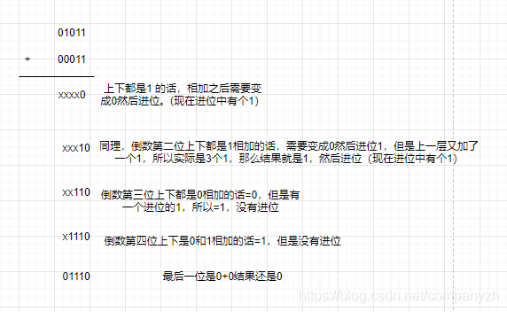

- 01 我应该站在谁的肩膀上 - OSI vs TCPIP模型.md.html
- 02 万丈高楼平地起- 物理层 + 数据链路层.md.html
- 03 OSI的灵魂就是我 - 网络层.md.html
- 04 要快还是要稳你说好了 - 传输层.md.html
- 05 是时候展现真正的技术了 - 应用层.md.html
- 06 重回小学课堂 - 二进制101.md.html
- 07 1+1 = 2吗？ - 二进制的计算.md.html
- 08 16进制又是个什么鬼？ - 16进制的讲解.md.html
- 09 我想有个家 - 什么是IP地址.md.html
- 10 我可是住二环的人 - IP地址的组成和分类.md.html
- 11 我已经没地方住了吗 - IPv6.md.html
- 12 向左还是向右 - IP路由.md.html
- 13 我能给你安全感 - TCP（一）.md.html
- 14 我那不为人知的秘密是什么 - TCP（二）.md.html
- 15 不问收没收到，就问快不快 - UDP.md.html
- 16 我为什么与众不同 - TCP高级篇（拥塞模型）.md.html
- 17 来，先看看我的家谱 - HTTP的身世.md.html
- 18 我都这么成功了，你却说我不行 - HTTP 的特点和缺点.md.html
- 19 我老了，让我儿子来吧 - HTTP2.md.html
- 20 稳重的大外甥 - HTTPS.md.html
- 21 HTTP的高级篇 - HTTPClient（Java）.md.html
- 22 想来我家，你自己查呀 - DNS.md.html
- 23 来的早，不如来得巧 - NAT.md.html
- 24 辛苦的邮政 - SMTP.md.html
- 25 你就是看不见我 - VPN.md.html
- 26 黑客的好帮手 - SSH.md.html
- 27 你可以得到我的心，却得不到我的人 - 物理安全设备.md.html
- 28 你怎么证明你就是你 - 身份验证和访问控制.md.html
- 29 我要怎么藏好我的考研资料 - 网络攻击（一）.md.html
- 30 我要怎么藏好我的考研资料 - 网络攻击（二）.md.html
- 31 如何保护我的考研资料 - 网络攻击防范.md.html
- 32 Linux网络安全 - 安全实战.md.html
- 33 结语.md.html
- 捐赠
07 1+1 = 2吗？ - 二进制的计算
Hello, 大家好，希望上一节课的基础，大家都已经掌握了。那我们就来继续这一小节的学习，来看一下1+1=2这一道永远的难题。
二进制的运算 - 加法和减法
加法
加法从基础来说，和普通数字的加法也没有什么太大的区别。加法都是从右向左，一次一个数。在每一个点上，都会生成一个和的数字以及一个要进位的数字。当然我们这里不是每到9才产生一个进位，而是每到2就会产生一个进位。那我们现在来做一道小小的加法11 + 3 = ？你肯定知道是14吧。哈哈。那让我们来看一下在二进制里是怎么做呢？
11 的二进制表达式 -> 01011
3 的二进制表达式 -> 00011
相加的结果 -> 01110
复制
01110 = 什么呢？ 1 * 8 + 1 * 4 + 1 * 2 = 14。我们来验证一下上面的加法，从右向左，1+1是不是要进位所以最右是一个0，然后第二位有三个1，那就留下一个1，在进位1个1，就成为了10，然后1+0等于1 - > 110，之后又是一个1 + 0 = 1，所以结果就是1110了，是不是很简单。

减法
下面我们再来看一下减法，减法实际上就是加法的变种，只不过就是A + （-B）。好，我们来看一下这个例子14 - 9。在这里我们要插播一下补码和反码的小知识（要不然你完全无法理解-9是怎么用二进制来表示）。
小知识课堂
原码
什么叫原码？可能提到原码你能想到的是底层源码，比如java的源码是什么？spring的源码是什么？但是因为我们中文的博大精深，所以会造成这个误解，但是你看字的话，很明显有不同是不是。那这里的原码是指什么呢？话语千遍不如一个实例。
对于正数来说，原码就是自己，比如
我们来用9来作为实例。00000000 00000000 00000000 00001001是9的原码
那-9的原码呢？其实就是在最高位加一个1。
这里1表示负数，0表示正数 100000000 00000000 00000000 00001001是-9的原码
复制
这里的最高位是你自己来选择是作为数值还是作为符号，比如一个byte类型的话，有8个字节。0000 0000，如果不使用符号位的话，数值就是从0到255，0就是0000 0000，255就是1111 1111。如果使用符号位的话范围就是-127 到 127。1111 1111 因为第一位是符号位，所以表示负数，然后后面的7个1表示127，所以值是-127。然后0111 1111也就是正数的最大位，等于127。所以范围就是-127到127。
我相信聪明的你这时候会有一个疑问，为什么负数不能直接用原码，而有什么之后要讨论的反码，补码？
那是因为原码有它的弱点
- 首先0是两个，那就是会有两个0,也就是+0和-0（00000000和10000000）
- 当要进行异号相加或同号相减时,方法比较笨拙- 先要判断2个数的绝对值大小，然后进行加减操作，最后运算结果的符号还要与大的符号相同。于是,反码产生了。（每一个概念的出现都是为了解决一个问题，对不对）
反码
反码也是属于数值存储的一种，多应用于系统环境设置，如linux平台的目录和文件的默认权限的设置umask，就是使用反码原理。在计算机内，定点数有3种表示法：原码、反码和补码。
对于正数来说，反码与原码相同（正数是多么善良和正义的存在）。
负数的反码是对该数的原码各位取反（符号位除外）。比如
100000000 00000000 00000000 00001001 的反码
111111111 11111111 11111111 11110110
复制
因为反码 还是有+0和-0这个问题。但是不修改的话，就会被时代所淘汰，反码就成为了过滤产物,也就是, 后来补码出现了。
补码
首先是谁也不怎么认真读的概念：补码表示统一的符号位和数值位，使得符号位可以和数值位一起直接参与运算，这也为后面设计乘法器除法器等运算器件提供了极大的方便。
对于正数来说，补码与原码相同（正数才是正道的光）。
负数的补码是对该数的原码各位取反（符号位除外）。然后在最后一位加1。比如
100000000 00000000 00000000 00001001 的补码加一之前是
111111111 11111111 11111111 11110110 然后再加上一
111111111 11111111 11111111 11110111
复制
好，现在让我们再回归到上面讲的那个减法。我们的例子是14 - 9。好，现在让我们来分析以下。
14是一个正数，所以基本上不太会有任何的trick。
00000000 00001110
下面让我们来分析一下-9。
首先是9 -> 00000000 00001001
-9 10000000 00001001
反码 11111111 11110110
补码 11111111 11110111
+00000000 00001110 （这个是之前的14）
00000000 00000101 （这个是最后的结果）。不用我说，你也能算出来结果是5吧。
复制
所以我们做减法的顺序是
- 把要减的数的正数算出来
- 把第一个最高位变成符号位1
- 把这个数的反码写出来
- 把这个数的补码写出来
- 把这个补码和之前的正数进行相加。
- 最后的结果就是相减的结果
希望你读到这里，头还没有晕
二进制的运算 - 逻辑计算
AND运算
AND是二进制的逻辑运算法，这意味着它需要两个输入的数值。也可以认为AND需要两个来源。它的运算很简单。基本的原则是
A B AND
0 0 0
0 1 0
1 0 0
1 1 1
复制
从上图你可以看出，只有A和B同时都是1的时候，AND的结果才是1。你可以把它想象成一个串行电路。一前一后两个电路。只有两个电路同时通的时候，整体才会通电，有任何一个不能通电的话，那就不成功。虽然很简单还是给你们一个例子吧。我要做一个严谨的人。
00111010 01101001 A
01011001 00100001 B
00011000 00100001 And之后的结果
复制
OR运算
OR是二进制的另一个重要的逻辑运算法，它的需求和AND一样需要两个输入的数值。它的运算也很简单。基本的原则是
A B OR
0 0 0
0 1 1
1 0 1
1 1 1
复制
从上图你可以看出，只要A和B任意一个是1的时候，OR的结果就是是1。你可以把它想象成一个并行电路。上下两个电路。只要有一个电路通的时候，整体就会通电，只有两个都不通电的时候，才会不成功。同样是一个小例子
00111010 01101001 A
01011001 00100001 B
01111011 01101001 OR之后的结果
复制
NOT运算
OR是二进制的另一个重要的逻辑运算法，它只需要一个输入就可
A NOT
0 1
1 0
复制
Exclusive-OR运算
Exclusive-OR通常也简写成XOR。当然它也是一个逻辑运算符。同样需要两个输入。当然它的结果可能是有一点和你平时的计算不同。只有当两个输入不同的时候才会是1。相同的话就会是0。
A B XOR
0 0 0
0 1 1
1 0 1
1 1 0
复制
这几种逻辑运算符中最最复杂的可能就是这个。我们还是看一个小案例
00111010 01101001 A
01011001 00100001 B
01100011 01001000 XOR之后的结果
复制
其实这一小节还是属于基础，只不过不是二进制的基础，而是二进制计算的基础。我们讲了原码，反码和补码，加法减法以及逻辑运算。小朋友，你是不是有很多问号？你的小脑瓜一定在想这些有什么用？我可以负责任的告诉你。IP的计算会用到。电路的计算会用到。因为二进制归根到底就是电流。那个就有点扯远了。还有一个最重要的就是算法的考试和面试也会问到。而往往二进制的算法题不长，但是不练习或者不知道基础的你往往想不到。我们下一节来看一下16进制，然后我会给你们举一些面试的时候会问到问题。
© 2019 - 2023 Liangliang Lee. Powered by gin and hexo-theme-book.